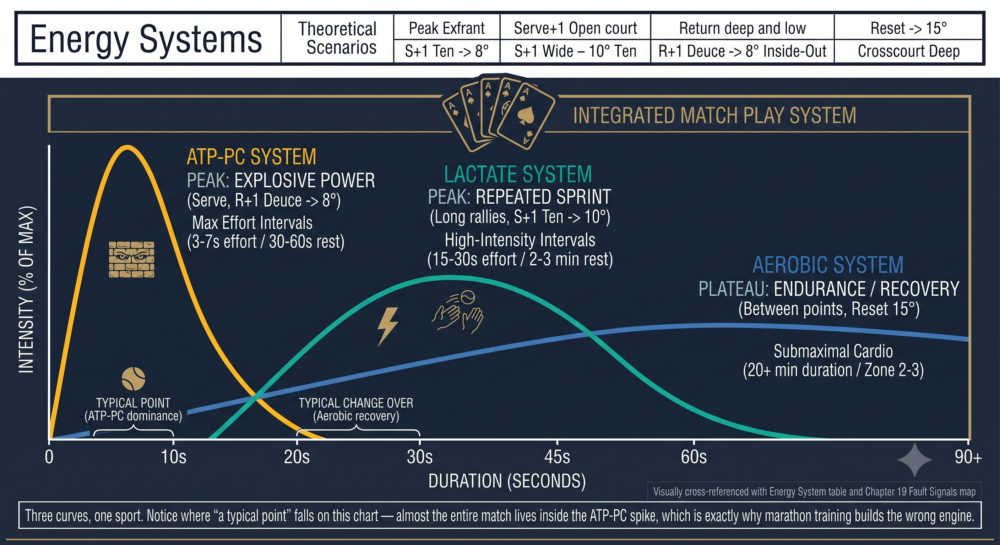
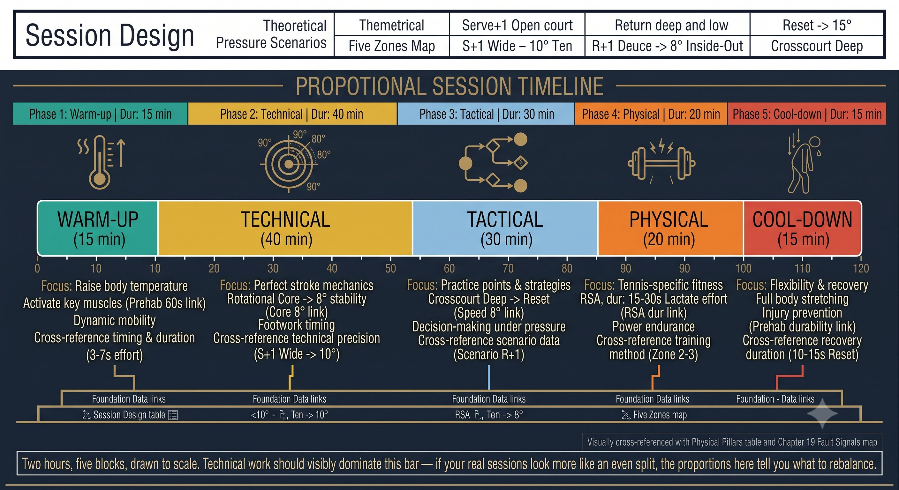
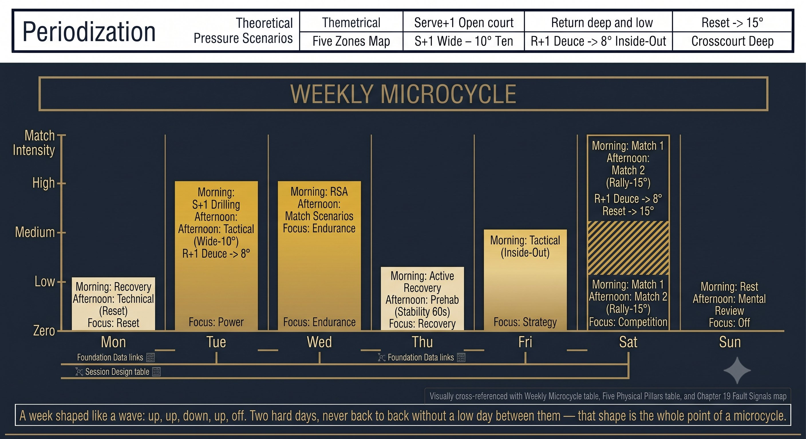

Chương 29: Thể Chất
(Bản dịch tiếng Việt của Chapter 29 trong Sổ Tay Quần Vợt Thống Nhất)
Thể Lực Chuyên Biệt Cho Tennis & Chu Kỳ Hóa Tập Luyện
Tennis không phải là một cuộc marathon. Đó là 100 đến 300 lần chạy nước rút 3 đến 7 giây, nghỉ 20 đến 25 giây mỗi lần. Hãy luyện các hệ năng lượng, không phải quãng đường.
Các Hệ Năng Lượng: Động Cơ
Nếu bạn luyện tập như một vận động viên marathon, bạn sẽ chơi như một vận động viên marathon — chậm, mệt, không có công suất bùng nổ. Tennis chạy trên ATP-PC cộng với lactate cộng với hồi phục hiếu khí.

Hình 29.1
— Henry Phạm
Tennis đòi hỏi ba hệ năng lượng theo những tỷ lệ cụ thể:
QUY TẮC: Tennis là ATP-PC (sprint) cộng với lactate (rally) cộng với hiếu khí (hồi phục). Luyện cả ba. Chạy marathon giết chết công suất ATP-PC.
Năm Trụ Cột Thể Lực Cho Tennis
Thiết Kế Buổi Tập: Buổi Tập Chuyên Biệt Cho Tennis 2 Giờ
Chu Kỳ Hóa: Kế Hoạch Cả Năm
Chu kỳ hóa gắn các đỉnh thể lực với lịch thi đấu:
QUY TẮC: Bạn không thể đạt đỉnh quanh năm. Hãy chu kỳ hóa. Ngoài mùa xây dựng. Tiền mùa chuyển đổi. Trong mùa duy trì. Đạt đỉnh cho 2 đến 3 giải lớn mỗi năm.
Chu Kỳ Tuần (Ví Dụ Trong Mùa Thi Đấu)
Hồi Phục: Sự Huấn Luyện Vô Hình
Mẹo Huấn Luyện
Nếu bạn không đo lường nó, bạn không thể quản lý nó. Theo dõi: HRV (hàng ngày), RPE (mỗi buổi), giấc ngủ (số giờ), độ đau nhức (1 đến 10), công suất đầu ra (ném bóng y hoặc thời gian sprint, hàng tuần). Điều chỉnh tải dựa trên xu hướng.

Hình 29.2
Điều Chỉnh Cho Độ Tuổi 40+ / 50+
NGUYÊN LÝ: Tennis cho người lớn tuổi không phải là "chơi ít tennis hơn." Đó là tennis THÔNG MINH hơn. Chất lượng cao hơn. Hồi phục tốt hơn. Đặc thù hơn là khối lượng.
Danh Sách Kiểm Tra Thể Lực
NĂNG LƯỢNG: ATP-PC CỘNG LACTATE CỘNG HIẾU KHÍ. TRỤ CỘT: CÔNG SUẤT, TỐC ĐỘ, RSA, CORE XOAY, PREHAB. CHU KỲ HÓA: NGOÀI MÙA ĐẾN TIỀN MÙA ĐẾN THI ĐẤU ĐẾN ĐỈNH CAO. HỒI PHỤC: NGỦ, DINH DƯỠNG, LẠNH, THỞ, MÔ MỀM.
– Luyện cả ba hệ năng lượng: ATP-PC (sprint), lactate (interval), hiếu khí (zone 2).
– Năm trụ cột hàng tuần: công suất, tốc độ và linh hoạt, RSA, core xoay, prehab.

Hình 29.3
– Chu kỳ hóa: ngoài mùa xây dựng, tiền mùa chuyển đổi, trong mùa duy trì, đỉnh cao giảm tải.
– Chu kỳ tuần: cao, thấp, cao, thấp, trung bình, trận đấu, nghỉ.
– Hồi phục hàng ngày: ngủ 8 đến 10 giờ, dinh dưỡng, thở, mô mềm.
– Theo dõi: HRV, RPE, giấc ngủ, độ đau nhức, công suất đầu ra. Điều chỉnh tải.
– 40+/50+: nhiều hồi phục hơn, nhiều prehab hơn, duy trì công suất bằng chất lượng, linh hoạt hàng ngày.
Chương Này Dẫn Đến Đâu
Chương này bao quát thể chất: thể lực chuyên biệt cho tennis và chu kỳ hóa tập luyện. Chương 30 là thẻ tham chiếu nhanh hợp nhất Q-V-ROOT-8-45-Impulse — bản tóm tắt một trang của toàn bộ hệ thống.

Hình 29.4

Hình 29.5

Hình 29.6